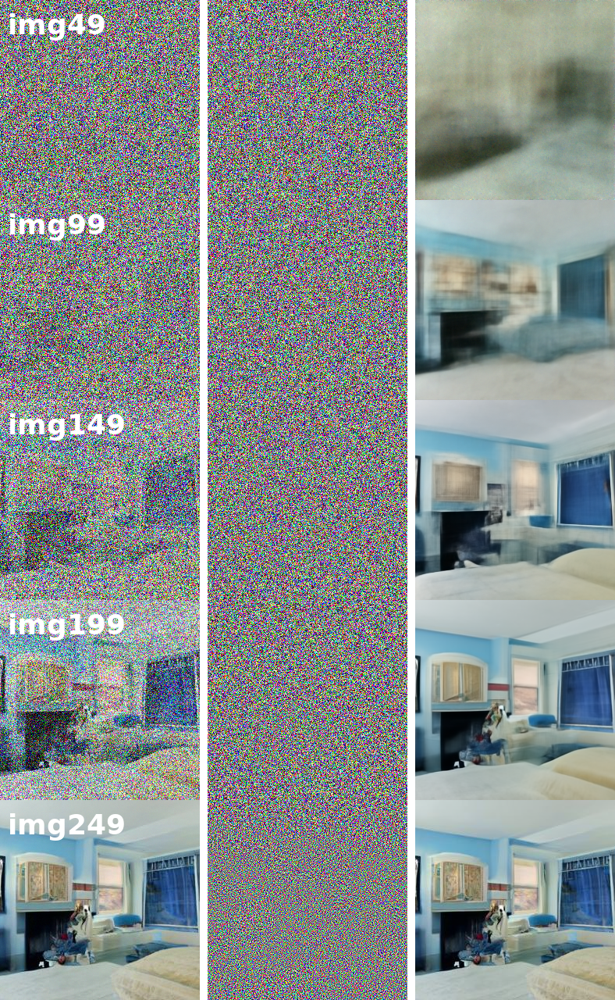
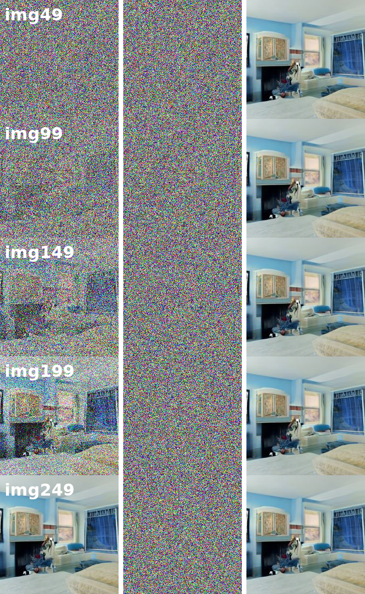

DDPM Code
📜 引言
该章节记录了笔者对DDPM进行代码实现的笔记。
| 创建者 | 创建时间 | 最后一次修改时间 |
|---|---|---|
| IamMI | 2025.8.31 | 2025.8.31 |
扎实的理论基础+强大的工程实现能力是算法工程师的基本修养。
🧩 Demo Code
我们参考 https://zhuanlan.zhihu.com/p/572770333 的代码
noise_schedule
if noise_schedule == 'linear':
self.log_snr = beta_linear_log_snr
elif noise_schedule == 'cosine':
self.log_snr = alpha_cosine_log_snr
elif noise_schedule == 'learned':
log_snr_max, log_snr_min = [beta_linear_log_snr(torch.tensor([time])).item() for time in (0., 1.)]
self.log_snr = learned_noise_schedule(
log_snr_max = log_snr_max,
log_snr_min = log_snr_min,
hidden_dim = learned_schedule_net_hidden_dim,
frac_gradient = learned_noise_schedule_frac_gradient
)
else:
raise ValueError(f'unknown noise schedule {noise_schedule}')该部分确定了正向过程中，如何加噪，通常有
其中我们定义 为信噪比，而上面的代码就是定义了
代码中的符号定义和上一章理论分析的符号有所出入，对应关系为
forward
def forward(self, img, *args, **kwargs):
b, c, h, w, device, img_size, = *img.shape, img.device, self.image_size
assert h == img_size and w == img_size, f'height and width of image must be {img_size}'
times = self.random_times(b)
img = normalize_to_neg_one_to_one(img)
return self.p_losses(img, times, *args, **kwargs)该部分仅适用于训练时，对任意时刻进行训练。先使用 self.random_times 抽取任意时刻，再进行训练。
p_losses
重点在于这三行
x, log_snr = self.q_sample(x_start = x_start, times = times, noise = noise)
model_out = self.model(x, log_snr)
losses = self.loss_fn(model_out, noise, reduction = 'none')它完成了 1. 添加噪声 2. 预测噪声 3. 计算loss
最后还添加了if self.p2_loss_weight_gamma >= 0: # following eq 8. in https://arxiv.org/abs/2204.00227 loss_weight = (self.p2_loss_weight_k + log_snr.exp()) ** -self.p2_loss_weight_gamma losses = losses * loss_weight使得模型更关注早期时间步，从而对细节的生成更加精细化
p_sample
@torch.no_grad()
def p_sample(self, x, time, time_next):
batch, *_, device = *x.shape, x.device
model_mean, model_variance = self.p_mean_variance(x = x, time = time, time_next = time_next)
if time_next == 0:
return model_mean
noise = torch.randn_like(x)
return model_mean + sqrt(model_variance) * noise使用 self.p_mean_variance 计算出 和 ，并使用重采样的技巧完成采样。
p_mean_variance
def p_mean_variance(self, x, time, time_next):
# reviewer found an error in the equation in the paper (missing sigma)
# following - https://openreview.net/forum?id=2LdBqxc1Yv¬eId=rIQgH0zKsRt
log_snr = self.log_snr(time)
log_snr_next = self.log_snr(time_next)
c = -expm1(log_snr - log_snr_next)
squared_alpha, squared_alpha_next = log_snr.sigmoid(), log_snr_next.sigmoid()
squared_sigma, squared_sigma_next = (-log_snr).sigmoid(), (-log_snr_next).sigmoid()
alpha, sigma, alpha_next = map(sqrt, (squared_alpha, squared_sigma, squared_alpha_next))
batch_log_snr = repeat(log_snr, ' -> b', b=x.shape[0])
pred_noise = self.model(x, batch_log_snr)
if self.clip_sample_denoised:
x_start = (x - sigma * pred_noise) / alpha
# in Imagen, this was changed to dynamic thresholding
# 超过最大值和最小值的值统设为最大值与最小值
x_start.clamp_(-1., 1.)
#
model_mean = alpha_next * (x * (1 - c) / alpha + c * x_start)
else:
model_mean = alpha_next / alpha * (x - c * sigma * pred_noise)
posterior_variance = squared_sigma_next * c
return model_mean, posterior_variance这里明确一下定义
-
-
-
代入和原先公式一致。
🧩 Diffusers
我们接着探索Huggingface发布的生成式库 diffusers，重点在于 sampling 部分。
加载预训练参数
我们首先从huggingface上寻找合适的参数权重
model_id = "google/ddpm-bedroom-256"
ddpm = DDPMPipeline.from_pretrained(model_id).to("cuda")这里我们选择卧室，因为其生成的质量最好
Sample
具体的操作可以见代码，这里就不赘述。
Exper1
我们进行第一个实验，观察DDPM的训练目标
直接预测从 到 的噪声，所以自然会有一个想法：为什么不直接使用 来得到 呢？
显然这是难以实现的，毕竟直接一步到位从一个完全噪点的图像，生成一副正常的图像。对于当前的算法还是过于吃力了，但是我们依旧可以开展实验，观察随着生成步骤往后，通过 公式预测的 呈现了怎样的 pattern
实验结果

{kind=link}
从左往右分别是： input 、 noisy_residual 和 x0_hat 。
input越来越精细化
x0_hat刚开始仅展现背景，随后出现了轮廓以及精细化细节，到后面逐渐固定，不再改变
注意到 x0_hat 一开始并不是精确的，但即便如此，它也能在后续的步骤中逐渐精细化。换句话说， x0_hat 作为 denoise 的指导，它一开始可能仅仅只是一个轮廓甚至是背景颜色，而 input 一开始也是向着粗糙的轮廓生成的，但 x0_hat 随着 input 的精细化，自身也在变得精细。整个过程有点类似 SGD，一开始的方向可能非常粗糙，但随着生成步骤的深入，方向也逐渐精细化，精确化。
我们可以将 noisy_residual 修改成
noisy_residual = (input-alpha_cumprod_t.sqrt()*x0)/(1-alpha_cumprod_t).sqrt()即
其中 是真实图片，此时的 noisy_residual 或者说 x0_hat 就是完全精细的。通过这种方法进行图像生成，有
实验结果

{kind=link}
该做法同样能实现收敛（废话）但也可以看出，如此精细化的目标指导，并不能让收敛速度得到提升。
Exper2
除了观察各种变量演化的pattern，还可以通过减少 denoise 的 timesteps，观察最终生成的图像质量。
实验结果

可以观察到，随着 timesteps 的减少，生成的质量也会逐渐变差，到了 timesteps = 50 时甚至出现了幻象。这说明神经网络的拟合能力终究是有限的，从噪声中提取信息的能力决定了 DDPM 架构的最快 sample 速度。
📋 参考文献
- 轻松学习扩散模型（diffusion model）https://zhuanlan.zhihu.com/p/572770333